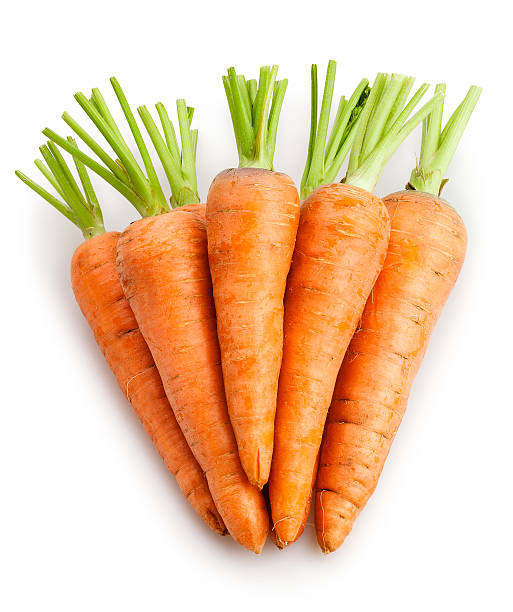
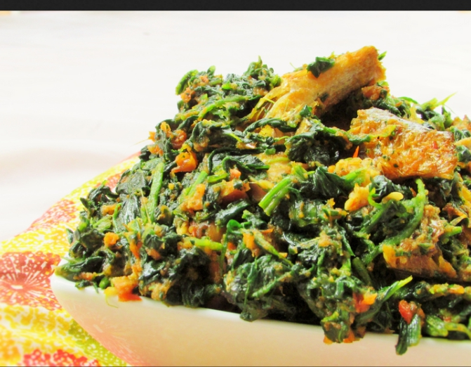
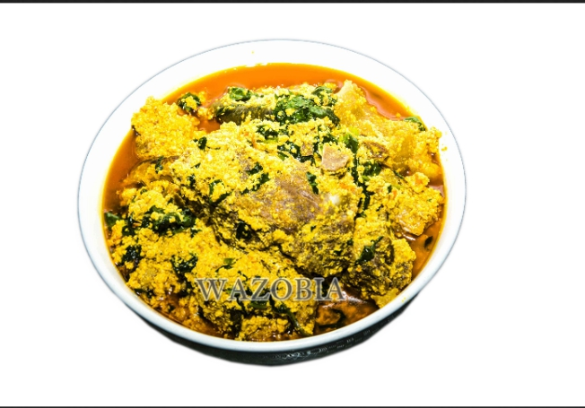

Welcome!
This is the best site for all your
Nigerian dishes, we provide you with all the knowledge you need on local dishes.

What's New?
We provide you with all the latest news on Nigerian dishes and the new styles that can be used to get a better result.
moreOfada Rice
Ofada Rice is one of Nigeria foods
that originated from wewstern
part of Nigeria. This rice is higly
nutritional and healthy for the body.

Efo Riro
Efo Riro is a delicious vegetable that
has been mixed with assorted meat
and fish. it is very easy to prepare
depending on how you want it.

Egusi Soup
Egusi Soup is one of Nigeria's favourite
soups because it is not cooked in one
tribe but amongst various tribes,
making it many peoples favorite.

Ogbono Soup
Ogbono Sopu is a special delicacy
that is cooked among the Igbo and Yorubas.
This
soup is can be eaten with different kinds of swallow.